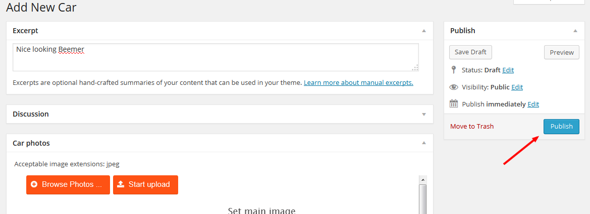
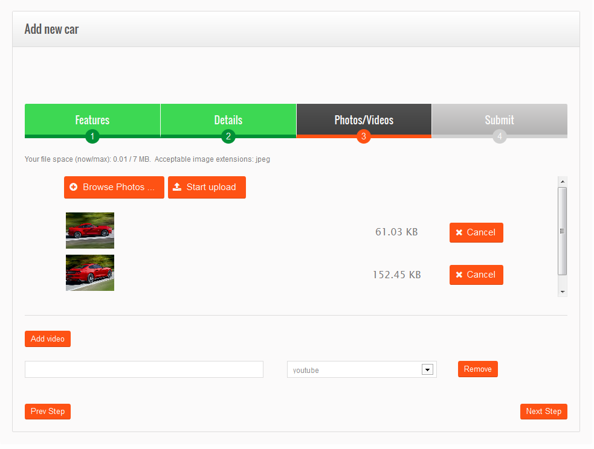

“CarDealer Theme” Documentation by “ThemeMakers” v1.0
"CarDealer Premium WordPress Theme"
Thank you for purchasing our theme. If you have any questions that are beyond the scope of this help file, please feel free to contact us via Support Forums or create a personal ticket there by clicking Support tickets button. |
Demo content installation
We would recommend you using our demo content installation in order to get all car producers installed and getting main settings set up for proper theme work. All demo cars should be used for reference in order to get familiar and understand the process of adding cars to the website. After you installed the demo you can delete demo cars and posts and add yours.
Demo content installation videocast
Demo content installation
Here you'll find the easiest and right way of upgrading your WordPress Theme up to it's latest version along with it's recommended plugins, but before you process with the theme upgrade we strongly recommend you to do a backup of your website:
- Log into your Envato account (Settings -> API Keys) and generate an API Key, then copy it into clipboard;
- Log into your wp-admin, Install and activate “Envato WordPress Toolkit” plugin;
- Navigate to newly activated plugin’s settings page (wp-admin -> Envato Toolkit) and fill in the prompted two fields:
- Type in your Envato marketplace username;
- Paste the code you’ve copied in step 1 to the second field named “Secret API Key";
- Save the settings and navigate to the “Themes” tab at the top of page;
- Click “Upgrade Automatically” beneath your certain theme and wait until the process finishes the new theme version installation;
- Navigate to (wp-admin -> Appearance -> Install Plugins) and upgrade the plugins to their recommended latest versions;
You’re done!
Shortcodes
NOTE: To get all shortcodes work make sure to install ThemeMakers Shortcodes Package plugin originally from your theme bundle
This theme offeres you the following shortcodes:
Accordion
Accordion/Toggle shortcode can be greatly used for your FAQs list or for any other purpose.
How to set this shortcode:
- choose a type: Accordion or Toggle one
- specify a style for a type chosen
- put a title for each next item
- add main content
Alert
Alert shortcode allows to add blocks to posts and pages with four notification types: info, warning, error, success. In case if you need to warn about something, to share any information or simply to point some particular text out, please use this Alerts shortcode. Simply enter text to show and select alert type.
Blockquote
Blockquote shortcode helps to make a selection needed in text. Simply put text you would like to show.

Button
This shortcode helps to add a button to the page. This shortcode options allow you to choose button text, pick color, size, URL and top indent.
Car Locations
Adds the list of location with showing the amount of cars available for sale in that specific location. You have an option to hide those places which do not have any item.
Car Makes
Adds cars makes to the page. You have an option to hide those makes which do not have any item.
Chart
Charts shortcode allows the adding of 7 diagram types: Pie Chart, Bar Chart, Column Chart, Geochart, Line chart, Area chart, Combo Chart. In settings to this shortcode you need specify Chart Type, Title, Chart width, Chart height, Font family, Font size, Background color, Chart titles and Chart data.
Pie Chart
Bar Chart
Column Chart

GeoChart
Line Chart

Area Chart
Combo Chart
Details Box
This element can be applied to your “contact us” page as an additional information. Fill in the form with fields needed, and you will get this:
Contact Form
Contact Form shortcode adds contact forms created in Theme Options > Contact Forms to any page you like.
You need just select contact form from dropdawn menu.
For more details how to create contact form please read Theme Options section > Contact Forms
Divider
You are able to divide your pages content with two types of divider shortcode: Solid and Empty space.
Google Map
This shortcode adds Google map to the page. Settings allow to select height, width, latitude, longitude, specify Zoom (from 1 to 19), also choose the Map Type (ROADMAP, SATELLITE, HYBRID, TERRAIN), choose a Mode: Map or Image, put the address, show/hide marker, scrollwheel, make marker dragable, and enable pop up.

Table
With the help of this shortcode you are able to insert tables into your pages content. We made it very easy to do:
- define row and columns count
- choose either show or hide row numbers
- choose table headers
- insert table data
Image
You can add any image to your pages with the help of this shortcode. In pop-up window please upload image, choose action (open a link, or no link on image), set align (non, right, left, center), choose image size, your image title link, top indent (px), right indent (px), bottom indent (px), left indent (px).
List
You are able to choose two list types within this shortcode: ordered and unordered list. If list is selected as unordered then you could add 20 different bullets for this list.
To set this shortcode is very simple.
- Specify the list type: ordered or not
- Choose bullets type and add text
- Add color to each next item
Pricing tables
You just need to do few things to add pricing tables:
- specify rows and columns count
- fill in tables
- Als you have an option to set the specif row as featured
Recent Cars
With the help of this shortcode you can add a lis of recently added cars on any page
The shortcodes allows you to manage the following options:
- Show/hide details button
- Show/hide link to all cars
- Enable/Disable Currency Converter
- Show/hide Layout Switcher
- Disable/enable Slider featired ciars image on hover
Staff
Staff shortcode adds your staff members to any post or page.
Tabs
To add Tabs fill in form for each item:
- add as much items as you need
- enter title
- add content
Titles
You need:
- to enter a title text
- choose title heading (h1-h6)
- select font size
- letter spacing (px)
- choose align type
- choose font family, font size and font weight
- define bottom indent
- pick the color of the text for this title
Audio
Audio shortcode helps to add audio files to the pages. Please be aware that theme allows to upload audio in .WAV .OGG .mp3 and many other formats. You need just upload file you would like to add and press Insert Shortcode.
Video
Video shortcode adds video to your any post or page. How to set this shortcode:
- select a type (youtube or vimeo)
- define width and height
- put a link to the video
Layout Constructor
The Layout constructor provides a view of the objects on your page or post and with the help of which the objects may be manipulated and controlled. It makes so easy to define your page or post structure.
Let's view it more detailed.
First of all you need to get this Layout constructor from your Screen Options panel:
Simply check box for Constructor and it appears under your Edit field:
Each item represents the object on front page. Layout constructor builds schematic view of page real layout.
To get it started press Add row button which creates a row for elements added.
All objects displayed in the Layout Constructor are dragable, so can be easily manipulated, e.g. added, edited, reordered, deleted.
Let's say you would like to split text in four columns in first row and 3 columns in second.
For this:
- press Add column button four times
- press Add row
- in just added row press Add column button three times
Ending up all these pressings you should get this:
Now you see schematic layout template of your text. The Layout constructor allows you to regulate each box width by a click "+"
Let's try to fill all these boxes with content. You no longer need to insert shortcodes inside shortcodes, it's never been so simple.
To add and edit content for each column just press
In pop-up window you get Column content editor:
Notice: Please keep in mind that effects for columns are available only under modern browsers, such as Firefox, Chrome, Safari, etc. and starts from IE 10.
Here you can add any content you like, add media files, add text, format text, moreover all shortcodes are available here under green "+" button. So once you are done and your first column is ready press "Apply".
Here are simple examples how your text can be shown up with the help of this Layout constructor:
You can add to each column images, videos, any other shortcodes, etc. This Layout constructor makes you website looks alive.
Car Location and Car Producers
Before adding new cars you have an option to define Locations and Producers for your further cars base. We tried to make it easy for you and included the full package of Locations and Producers FOR FREE to this theme. With the theme installation you will get a preset Location and others comes with theme package which could be uploaded through DB migrate plugin. But also you can add more car Makers and Location in case you would need to add any specific ones.
Location
This option gives you an ability to categorize the items due to location
First you would need to add Country, for instance USA and click "Add new Car Location", don't forget to fill in the slug as well
Then you can add New State and apply it to USA by selecting USA in the dropdown menu, in this example we added Arizona
And lets add Phoenix city to Arizona state in USA
As mentioned before you will be receiving all countries with the theme package and you can install the required country with all states, cities included. You need to go to Theme Options > Import/Export and in "Import Location" section click browse and select the path to required country and then click upload. It would take few seconds to process and the this location appears in Cars>Locations.
Videocast: Adding more location to a website
Producers
Here basically the same procedure takes place - add the name of Model and sub-model, slug and description. The Car producer here is used as parent for creating the the model. For example Honda should be selected as parent for adding Civic model.
However we pay your attention that our theme offers you to upload already created Producers database with all available Cars Makes and Models, as mentioned before you get these with the theme Package if you install the demo content
Adding car to your website as admin through WP backend
Once you have added required Locations and Makers you can start to add a new car.You just need to click on Cars menu and then hit Add new
In first section you would need to enter short description of your car in the Excert field and add few car photos. You need to browse for required images, add them and then hit "Start upload" for adding these to the server
Scrolling down to the next section Car Attributes. Here you need to select all info about your vehicle such as year, make mode, location, milage,etc. All these parameters could be managed in Cars > Settings, please find more info about in Car Settings Panel in documentation menu sectiom. And also here you have an option to add video of your car, it could be either youtube or vimeo link
Next section here is Advanced for describing all additional features of your vehicle such as Parking sensors,whether your car has Climate control or not and lots more, and these could be managed in Settings as well, you can add/delete these fields.
Once you selected all these options and info of your car you can go ahead and hit Publish and your car will be added to the website 
Now lets take a look at our car that we just added:

New User Registration
From the very beginning each user has to complete registration on your website to make any further actions (add cars, post comments, etc.)
There is an icon "Login" on the right and by clicking on it the user has an option to login with the existing account or create and new, and as new user we need to hit "Create an account"

It gets switched to a form where user need to enter his email and name and the system will send an email with his account credentials. Simply fill in these fields and hit register.
Once Register button is clicked the notification appears
And then you get an email with the account credentials, so lets login to our new account. Just hit Login and enter these access details from the email and then you can go ahead and start adding cars to the website.

Adding car to the website as new registered user
Once you created an account and logged in the Login icon would be changed to drive and by clicking on it the menu appears which allows you to mange your account, review your added cards, and And a new one so lets hit the last button there "Add new car"
You need to go through 4 steps for posting the car on the website:
- In first step fill in Car Features
- In the following second step select required Car details
- In the next step you can add the car photos, you need to browse for photos, and the click "Start upload" to upload images to server. Also there is an option for adding video, either youtube or vimeo link. 
- In the Last step you need to check " I agree to the terms and conditions" and the hit Complete Submission. FYI this license text could be manged by the admin in Car Settings
Then you get the notification stating the car was successfully added to the website and it could be reviewed and edited by clicking on "My Cars" in Drive
Editing User Profile
Every visitor that registed on your website has an option for adding cars and changing their profile info any time. They just need to hit Drive on the right side and the My Profile.
And then visitors could change all info accordingly. Also there is a list on the right side showing all cars that user have added.
And the most important part here is "Your permission" section. Every new user gets the default account status which allows them to add specific amount of cars, adding images to match the preset account space in MB, etc. And the admin of the website could manage the default account settings in Car Settings > Account Manager.Please read more info about it in section "Managing Users Account".
They could purchase the upgraded account status with Paypal by clicking on Upgrade Status. The upgraded account allows to add more cars, add more HD space to their account, etc. They will be redirected to a page with options to select the Upgraded Account, I would like to highlight that these upgrade could be managed by website admin in Car Settings > Account Manager.
As mentioned before you can set the File space for your users, the amount of cars they can add and by default they don't get any option to set car as feature and if they would like to get this option for setting their cars as featured they could purchase these options as well by clicking on "Get more" button, And you as admin can manage these packages in in Car Settings > Account Manager.
Managing Users accounts
This theme is great for any type of car business. Even if you are not a cardealer and would like to connect your life with cars you can create a car market website where different users can post their car for selling and with this being said you can earn money by selling upgraded account statuses for your users which will allow them adding more cars on web. Every new User gets the default account status and you can manage this account credentials, so lets take a look at this closer.Lets open Account Manager menu Cars -> Settings - Account Manager.
You can create different account statutes according to your need and business plans, so lets review our 2 examples we have created. First is default account and we have set it as Default Account status. Lets take a look at this account.
Here you can manage the following data:
- You can set the name for the account status
- You can set the Account life Period in days
- Account price, if its default one we left it 0
- You can set the maximum count of cars that the user with the default account status could add
- You can set the Disk Storage for Images in MB
- In Featured Cars count you can set the amount of cars that client can set as featured
- And Featured Cars Lifetime, meaning how many days the car would be set as featured
And here is the upgraded status we have created:
Once the new visitor created an account on your website they can edit their profile and upgrade their account statuses in "My Profile". They will see their status info and all credentials that are allowed by their account status. And if they decide to increase the amount of cars they could add they just need to click "Upgrade status" and process the payment with the Paypal for selected upgrade.
Also you can create and offer to your users Featured Cars Bundles which will allow to set their cars as features to make sure their cars are always in top of the lists and its definitely going to help them sell their cars even faster.
And you can edit the following data:
- You can set the bundle name
- Featured Cars Count
- One Featured Car Lifetime
- Bundle Price
Users could purchase these bundles while editing their profile by clicking "Get More" button
And they will be redirected to a page with offers
Please be aware in order to get everything working properly and getting your money to your PayPal account you need to enter your Paypal account credentials in Dealer Paypal section in WP admin panel. Please find more info about it in Dealer PayPal section
Dealer PayPal
In previous sections we have reviewed on how to set different account statuses and how to create featured cars bundles. With this theme we have implemented PayPal plugin which allows you to earn money for selling accounts and bundels and in order to get everything working proper you just need to enter your Paypal credentials in Dealer PayPal
Also you need to select the right pages you have created with the help of page templates for Successful and failed payments
There is an option available for reviewing the Payment History for keeping track of all payments made on your website
Car Settings Panel
In this page you can mange different option for car info displaying. You can also set options for front slider, edit messages, manage user accounts and set the watermark to images. Lets review each in of the menu in more details
First field is Default Settings and it consists of 5 submenus: Default Settings, Default page Links, Listings Page, Add New Car Page and Single.
- In the Default settings you can manage the following information:
- Enable/Disable Currency Converter
- Set default currency on the website
- You can choose the currency for default currency converter
- Choose the default File extensions for uploading images
- You select the displaying on Mileage, whether its kilometres or Miles
- Select an engine size unit
- You can disable/enable an option which allows to add cars only for registered users to add cats to Watchlist
- You can set the max HDD size for images the user can add
- You can set how many days to keep the sold car on website before sending it to Draft
- You can set the Location Captions
- Show/hide Empty Location
- Show/hide Empty Producers
- Show/hide Cars Statistic on Dealer page
- In the Default Page links you need to set the correct links for created pages with the help of page templates(More info in section "Page Templates")
- In the Listings page you can set the following details:
- Show/Hide details button
- Show/Hide layout switcher
- Enable/Disable option to slide featured cars images on hover
- In Add New Car Page you can mange the following data:
- You can set the amount of letters in Cars description
- You can select the required Fields that should be filled in upon adding car
- And also here you can write your websites license text, and the users would need to confirm they have read it upon while adding car to your website
- In the Single Car Page you can manage the info which will be shown up on car single page:
- Show / Hide Public Info
- Show / Hide Contact Form
- You can select the position of Sidebar
- Show / Hide Similar Vehicles
- Show / Hide Contact Person Info
- Show / Hide Comments
The Next section is Car Options Editor which allows you to create more Advanced options group for cars which users need to select in step while adding car or while adding as admin through admin panel
In the Front Page Slider you can mange the settings of the Front Slider:
- Show Slider with or without Sidebar
- Set Slider height
- Disable/Enable cropping image
- select the Images Handler
- Choose the images for showing in Slider
- Set the amount of images in the Slider
- Enable / Disable Loop Slides
- Disable/Enable the automatic animation for Slider
- Disable/Enable Reverse the animation direction
- Set Slideshow Speed
- Set Animation Speed
- Select the Animation Type - Fade or Slider
In Messages section you can edit the text of the notifications that appears upon different actions
In Acount Manager you can create and edit your users account statuses, Please review "Managing Users Account" setings for more details

Watermark section gives an ability to add watermark to any image of your website. You as an admin just only need to upload the logo image, determine its opacity, watermark size in % and choose its position. Sure if you do not need to get all images watermarked then simply disable this Place watermark on image option.
Editing Advanced Car Options
When customers/visitors add car to your website they need to enter all required info in 4 steps - Features, Details, Photos/Videos, Submit. And lets talk specifcally about second step Details where which consists of advanced additional car options
Lets review our example with 5 advanced options groups we have created : Comfort, Environment, Exterior Features, Sports, Power.

These Advanced options groups were created in Cars > Settings > Car Options Edit and you as admin can add more groups or delete the existing ones.

Lests review the Comfort group closer. You can add more fields/options by clicking "+". You can enter the the name of this option, in Item Type you can choose whether its checkbox or the elements should be seleceted and you can write short description of this option.
Theme Translation
The initial idea of our our CarDealer theme is to make it suits to any car business in any part of the world therefore we have made it translation ready. For this purpose the theme comes with the PO files which could be translated with a help of any plugin suitable for PO translation. Just FYI you can use any plugin for translating PO files since there are lots of available plugins for tranlation purposes but we would recommend you to use Loco-translate as its free and has user-friendly interface. So in this post we are going to review on how to work with this specific plugin. First of you would need to download it and get it installed on your website. You can get it downloaded by following this link Once you downloaded it you can install in a regular way as all WP plugins. And then follow these advises below.
1. Go to the Loco Translate home screen
After you got it installed click the admin menu item that says "Loco Translate" (at the bottom of the left side-bar in the WordPress admin area). Clicking this takes you to the plugin home screen which lists all translatable 'packages'.
On the home screen you will see all your available themes including CarDealer WP theme.2.Add a new language
In the CarDealer theme row you should see a button that says "+ New language". To start translating the theme into another language click this button and you'll be taken to a new screen where you can choose the language you want. Select a language from the dropdown list of common languages. In this example we'll select 'Spanish' and the text field below will be automatically populated with the language code "es_ES"
If you're offered a choice of where to create the new file, always select the global languages directory. You won't see this choice if only one of the options is found to be writeable, so check your folder setup and make sure it's the global one. Then click the 'Start translating' button and you'll be taken to the editor screen for translating the theme into Spanish.
3.Translate some string
Once on the editor screen you'll see all the strings the theme has defined in its template file. Untranslated strings are shown in bold blue. To start with they will all be untranslated. The basics of the editor should be fairly intuitive. Select the English string at the top and enter your translation in the pane at the bottom. You can ignore most of the editor buttons for now. We're just going to enter a translation and save it.
For our example we've picked out the phrase "Page not Found". Using the text filter at the top of the editor we can find this phrase quickly and select it in the list. Then we enter the text "Página no encontrada" into the bottom pane as our translation. The string at the top now shows a star icon to indicate that our changes are not yet saved.
4. Save your changes
So far our new translation files don't exist on the server. Above the editor you should see the text "Updated: never". This just means the files haven't been created yet. Continue to translate as much as you like and when you're ready click the Save icon in the editor toolbar. Once the translation file is saved you should see a green success notification. Congratulations, you've saved your first WordPress translation file.
If everything has gone well, you now have Spanish translation files on your server for the Cardealer theme. Take a look in the folder you set up earlier and you should see two new files:
wp-content/languages/themes/es_ES.po
wp-content/languages/themes/es_ES.mo
Checking they exist is good for our sanity and helps you see how it all works. The PO file is a human-readable source file. The MO file is the binary file that the Omega theme will ask WordPress to load. Loco Translate has now completed its job. It has compiled a MO file and saved it to disk with the correct name. This is all it does. What happens next is down to WordPress and the theme.
Important part to know - The theme has required plugins for proper work and each plugin has its own PO files so you would need to get these transalated as well. Simply scroll down to the plugins section and follow the same instructions for translating plugins PO as for the theme.
This is just a basic instructions and we would recommend you to review the full basic instructions created by Loco team by following this link and for advanced instructions follow this link
In case you would like to like to make your website multilingual you would need to use WPLML plugin which is the best for this purpose and of caurse our theme is fully compatible with it. This plugin is not free but with purchase you get full documentation and outstanding support provided by developers team. You can find information and introduction video of this plugin by following this link
Pages Templates
There are more than ten template types available which we have added in order to save your time so you don't need to create these from scratch:
- Default Template
- Theme Blog
- Theme Blog Alternate
- Account Status Upgrade
- Add New Car
- Car Compare
- Car Listing
- Car Watch List
- Dealer Page
- Edit Car
- Login Page
- PayPal Failed
- PayPal Success
- User Profile
- User Cars
For proper theme functionality you would need to create these pages and insert the links for these pages in Car Settings > Default Page Links. These Page templates have a preset content and functionality and each of these appears accordingly when customer trying to login, reviewing cars on watch list,etc.
Front Page Slider

On our demo front page we use slider to demonstrate cars to sell. We are going to guide you how and where to find this Front Page Slider settings. At first we go to admin panel > Cars > Settings > Front Page Slider Its options allow you to:
- show slider with or without sidebar
- choose slider height, since default width is 980(width X height)
- either to crop images or not
- content to show: either featured cars or already created slider groups. The information about how to add slider group please check Flex slider chapter of this help doc.
- set maximum Features cars count
- enable/disable caption
- set animation loop
- enable slideshow
- randomize slides order
- reverse the animation direction
- set an initialization delay (in milliseconds)
- set animation speed
- set slideshow speed
- choose the animation: fade or slide
Flex Slider & Slider Group
CarDealer includes great Flex slider. It works fast, accurate and bright. That's how it looks:
Flexslider
Let's start. First step to make slider is to create one or more slider groups to show. To do this you go to admin panel > Slider Groups
From the very beginning give a name for this slider group.
Note: Please keep in mind do not repeat the names for slider groups even if you delete one.
Clicking on "Add slides" button provides you with pop-up media gallery window where you can choose an image for a slide or few images at once (holding Ctrl key)
After you check an image for slide press "Insert into page" button.
Next step is slide editing. Here we have special form to fill:
So,in an appropriate section fill in box for this slide title and subtitle, choose font family, font size and text color for both. Also you are able to add a link to a slide and enable "Show button". Do not forget press "Publish" when you are finished.
Once all images for slider are added and slider group is full we are going to show it on our front page. By the way, it is possible to have slider on any page you like. For this we are going to Pages and choose here that page where our new created slider will be located. In Page slider box you need to choose slider type and slider group to show up.
Save changes and refresh your Home page, new created slider will appear.
Additional options for Flex slider you can find in Appearance > Theme Options > Slider Settings > Flex Slider.
Options for Flex slider allow to:
- choose Slides size
- enable/disable caption
- enable/disable Slideshow
- enable/disable animation loop
- set an initialization delay
- set the speed of animations
- set the speed of the slideshow
- select your animation type: "fade" or "slide"
- reverse the animation direction
- randomize slide order
Theme Options
Theme Options extended panel helps you to customize current theme the way you personally need. Let's get it started to view everything in depth.
Here is like Options Panel looks

General
It starts from section “General” which provides with next options:
- to upload favicon for your website. It will appear in your browser's address bar as per example below. Recommended dimensions: 16x16. Recommended image types: png, ico.
- choose your website Logo : either Image or text. If you prefer to show text for your logo then check Text box, enter text, choose font family and font size for it, choose color for this text as well
Also pay attention that system automatically remembers few last logo (color) variations. In case you want to get back to one from previously used simply click on appropriate arrow. To use default color press “Reset ” arrow.
If as a website logo you choose to show an image then check Image box and upload your logo image there. Recommended dimensions: width = 300px, height = any. Recommended image types: png, gif, jpg.
- to select your default sidebar position
Styling
Next section is “Styling” the most capacious one. It includes options for:
- General Styling options
- Headings
- Main Navigation
- Content Styling
- Buttons Styling
- Widgets Styling
- Footer Styling
“General Styling” subcategory allows to:
- to modify your website color schemes with the help of Skin Composer
Here you can create new skins, choose color mark, load skins from already existed ones (More detailed instructions you can find in "Skin Composer in Use" chapter of this help doc.)
- to edit text:
- website font family
- website font size
- website text color
- website normal links color
- website links mouseover color

- to manage website Borders width and website Borders color
- to change website background (you can use separate color, custom background image or patterns and colors for these patterns).
- to apply your customization
In Headings section you can work with font families for all headings of your website from H1 to H6. You can select :
- Font Family
- Font Size
- Font Color
- Normal Link Color
- Mouseover Link Color
Main Navigation section is responsible for:
General settings: of Main Console
- font family of main navigation items
- first level font size
- second level font size
Links Color (First level):
- normal
- current
- mouseover
Links Color (Second level):
- normal
- current
- mouseover
Background Colors for:
- Navigation Container Gradient where you need to choose top and bottom colors
- Navigation Current Item Gradient where same action is - to choose top and bottom colors.
Content styling options make possible to modify Main Container background color
Buttons styling section allows you select:
- Font Family and Font Size
- Text and Background for Normal (default) buttons state and for Mouseover ones

Widgets styling section allows you to edit sidebar widgets by changing: Widgets Title Color, Title First Word's Color, Text Color, Normal Link Color, Mouseover Link Color.
For Boxed Widgets you can manage the same - Title color, Title First Word's Color, Box Title Gradient's Top Color, Box Title Gradient's Bottom Color, Text Color, Box Background Color, Box Border's Color.
Also you can make settings for footer widgets, specifically for: Title Color, Title First Word's Color, Text Color, Normal Link Color and Mouseover Link Color
Footer Styling allows us to choose:
- Footer Background Color
- Footer Borders Width
- Footer Borders Color
- Text Color
- Normal Link Color
- Mouseover Link Color
Sliders Settings
Sliders Settings panel provides with options for Flex slider.
Options for Flex slider help to:
- choose Slide size: either full sized slider or 940x300
- enable/disable caption
- enable/disable slideshow
- set an initialization delay
- set the speed of animations
- set the speed of the slideshow
- select your animation type: "fade" or "slide"
- randomize slide order
- reverse the animation direction
Blog/News
In this section you can make all setting for your Blog/News page where your posts are shown up.
These options are divided into two blocks:
- Options for Listing page (General view of your Blog/News listing page)
- Options for Single page view.
Setting Listing page you can:
- show/Hide blog comments
- define Excerpt Symbols Count. This option will excerpt full article content with a necessary amount of symbols on the blog listing page
- set Meta Data: show or hide All Meta Info, only Date Info, only Author Info, Tags Info or Category Info
- also you are able to choose if to show full post content or excerpt
Also there is an option to show or hide Date info for Alternate listing
Single page can:
- show or hide related posts
- control Meta Data showing up: show or hide All Meta Info, only Date Info, only Author Info, Tags Info or Category Info
Contact Forms
CarDealer has an option to build special contact form to get messages from your visitors, users and customers.
You do not need any additional plugins or application. This function is already built in. Moreover, you are allowed to add as many contact forms as you need and use them on few different pages.
So, let's get it started!
At first we go to admin > Appearance > Theme Options > Contact Forms. System asks you to add new form. For this enter a title for the form and press “+” Add.
Once you press "+", you get special contact form constructor
Please be aware that you can add as many blocks as you need by pressing “+” button at the top, all blocks are dragable, in case you need to change blocks order simply drag and drop it.
So, first block asks you to choose “Submit” button color and put receiver's e-mail address.
All next blocks are added in depends on your personal wish and need: choose field type to each next block (Textinput, e-mail, subject, message body, select) and put field label (text which will be displayed inside this field).
Each block gives you an option to make it required or not. So in case you need to enable * simply check “Required field” box.
When all blocks are added and you basically finished your form building then we are going to show it up on front-end. We do it with the help of shortcode “Contact Form”. For that we go to admin > Pages and add new page called “Contact us”, for example. Then, take a look at green “+” shortcodes icon and click on it. In front of you full shortcodes list appears. Choose “Contact form” among others.
In new pop-up window you get Contact forms list, from which you need to choose one to display.
Do not forget press “Publish” to save all changes.
Custom Sidebar
This theme allows to create custom sidebars in case default ones are not enough for you. Custom Sidebar creation need only few things:
- add a title for this sidebar
- once you put sidebar name and press “Add”, you are requested to specify page/pages and category/categories where this exact sidebar will be displayed
- after saving all changes we go to Appearance > Widgets to fill our just created sidebar with widgets.
Pay attention that custom sidebars can be shown only for pages and categories, but not for single post/page.
SEO Tools and SEO Groups
The theme includes built-in SEO tools and options. For more detailed information please go to SEO options chapter
Footer
Here you are able to change footer signature
 Simply remove existing text or put your own and save changes.
Simply remove existing text or put your own and save changes.
Also in case you do not need footer area at all you can simply turn it off
Plugins
Here you can find ThemeMakers Add This Share plugin and DB Migrate. In ThemeMakers Add this Share you can select the share buttons type, you can choose the social buttons to be shown and select that pages where AddThis will be added on
In DM Migrade you can install the demo, Import Car Producers , Import Location and Export All data in case you decide to move to another server. In regards to demo installation please review the section Demo Content installatio
Skin Composer in Use
We created amazing tool to help you customize the theme with no complications and saving your time. Skin Composer allows to edit already existed color skins, add new based on ready ones and create your own. The point is that each skin you modified can be saved and in case you need to get back to one from previously created just pick it to use. Let's walk trough the new skin creating with our Skin Composer. We will try to show it in step-by-step way, so please be attentive in order do not miss anything.
At first take a look at the Skin Composer location on Theme Options panel
Please pay your attention that at first we have to make all customizations for Styling section (General Styling options, Headings, Main Navigation, Content, Buttons, Widgets, Footer Area) and only then just created skin will be saved. So, if you already know how you are going arrange the future skin and you defined few main colors, fonts, etc. then we can start.
First section to customize is Styling > General where you can:
- to modify your website color schemes with the help of Skin Composer.
Here you can create new skins, choose color mark, load skins from already existed ones (More detailed instructions you can find in "Skin Composer in Use" chapter of this help doc.)
- to edit text:
- website font family
- website font size
- website text color
- website normal links color
- website links mouseover color
- to manage website Borders width and website Borders color
- to change website background (you can use separate color, custom background image or patterns and colors for these patterns).
- to apply your customization
In Headings section you can work with font families for all headings of your website from H1 to H6. You can select :
- Font Family
- Font Size
- Font Color
- Normal Link Color
- Mouseover Link Color
Main Navigation section is responsible for:
General settings: of Main Console
- font family of main navigation items
- first level font size
- second level font size
Links Color (First level):
- normal
- current
- mouseover
Links Color (Second level):
- normal
- current
- mouseover
Background Colors for:
- Navigation Container Gradient where you need to choose top and bottom colors
- Navigation Current Item Gradient where same action is - to choose top and bottom colors.
Content styling options make possible to modify Main Container background color
Buttons styling section lets you select:
- Font Family and Font Size
- Text and Background for Normal (default) buttons state and for Mouseover ones
Widgets styling section allows you to edit sidebar widgets by changing: Widgets Title Color, Title First Word's Color, Text Color, Normal Link Color, Mouseover Link Color.
For Boxed Widgets you can manage the same - Title color, Title First Word's Color, Box Title Gradient's Top Color, Box Title Gradient's Bottom Color, Text Color, Box Background Color, Box Border's Color.
Also you can make settings for footer widgets, specifically for: Title Color, Title First Word's Color, Text Color, Normal Link Color and Mouseover Link Color
Footer Styling allows us to choose:
- Footer Background Color
- Footer Borders Width
- Footer Borders Color
- Text Color
- Normal Link Color
- Mouseover Link Color
When all these settings are made and you are ready to save them in one Skin we go to Styling > General and here in special field "Create a new skin" enter a name for this new skin. Do not forget to pick the color mark for this exact skin you are adding
Only one thing left to create new skin is to press "+" button
In new pop-up window you'll get the notification that new skin has been added.

That's it! We have just added new Skin.
In this way you can create as many skins as you like and anytime you are able to choose some of them to load for the whole website, to modify if needed or even delete.
Videocast: this video has been recorded for our other WordPress theme, but please use it as an example, it shows the main features of Skin Composer
Skin Composer in Use
Custom Page options
CarDealer theme provides with variety of options and abilities. So here you are able to choose and customize each individual page and post with these options: decide either Hide or Show Single Page Title, choose Page Background (image or single color) and Page Sidebar Position.
SEO options
This theme allows to control Meta fields for each post, page, portfolio and gallery. Just fill each field (Meta Title, Meta keywords and Meta description) with proper information.
Also you are able to manage SEO options in tab Theme Options > SEO Tools > General.
Here you can set Meta fields for your Home Page, Post listing, Cars, Staff listing as well.
On tab Theme Options > SEO Tools > SEO Groups you can create few groups for the categories, however pay attention that one SEO group can be used only for one category.
Widgets
CarDealer provides with 8 default sidebars for widgets to be located and also with ability to add custom sidebars. Once theme is installed and activated your sidebars contain default widgets. All widgets are dragable, so to replace default items with other ones you simply need to drag and drop a widget need to any of sidebars.
There are next widgets available within this theme:
TMM Banner
Adds some banners to your sidebars. Just fill in boxes needed.
TMM Add This
Displays share buttons.
TMM Car Counter
Displays amount recently added cars.
TMM Car Dealers
Displays dealers.
TMM Car Dealers Cars
Displays dealers cars.
TMM Car Dealers Contacts
Displays current dealer contact info. Only for single car page.
TMM Car Dealers Contacts
Displays current dealer contact info. Only for single car page.
TMM CarDealer Search
CarDealer's search widget, helps to find cars.
TMM Car Dealers Map
Displays current dealer location on map. Only for car single page.
TMM Car Statistic
Displays Car statistic. Only for user cars page.
TMM Contact Form
A widget that shows custom contact form.
TMM Contacts Bar
CarDealer's custom contact form.
TMM Facebook LikeBox
Facebook Like Box Widget.
TMM Featured Cars
Displays featured cars
TMM Flickr feed
This widget makes possible to display all images from your account http://www.flickr.com if you have some.In options just set title for this widget, your Flickr username and number of images you would like to be shown.
TMM Google Map
ThemeMakers Google Map allows you to add map from Google to one of sidebar. Set a title for this widget, specify latitude and longitude, define zoom, select map type and chose either display marker or not.
TMM Latest Tweets
The widget can display your latest tweets from Twitter. For this you need to enter a title, Twitter widget ID, number of tweets to display. Here you can ask where you can get this Twitter ID, please read the following instructions very carefully:
- Go to www.twitter.com and sign in as normal, go to your settings page.
- Go to "Widgets" on the left hand side.
- Create a new widget for what you need eg. "user timeline" or "search" etc.
- Feel free to check "exclude replies" if you don't want replies in results.
- Now go back to settings page, and then go back to widgets page, you should see the widget you just created. Click edit.
- Now look at the URL in your web browser, you will see a long number like this: 345735908357048478
- Use this as your ID!
Sometimes it takes some time to generate and process all new data, so be ready to wait.
Videocast:
Twitter widget ID http://www.screenr.com/6W0H
TMM Loan Calculator
Shows CarDealer's Loan Calculator
TMM My Profile
Displays links to pages for managing cars added by user. Only for user cars page.
TMM Recent Cars
Displays recently added cars.
TMM Recent Posts
Makes available to show up recent posts in widgets. You need just specify posts categories, number of posts, enable or disable thumbnails, excerpt, See All Button, and specify excerpts symbols count.
TMM Social Links
Shows up your accounts in Social networks, such as Twitter, Facebook, Dribbble, Vimeo, Youtube, RSS.
TMM Timetable
Shows the timetable, displays working days and hours.
Search Widget
We are proud to introduce the Search Widget that we have implemented with our CarDealer WP theme. It helps a lot to search the specific cars through all the cars added on the website.
This widget could be added to Slider sidebar and to any other sidebar. Also you can manage the search credential fields in Appearance > Widgets
Javascript Plugins/Scripts
Javascript files are located in js folder. By default theme uses minified version of the all scripts to reduce page loading times and to save your site bandwidth.
- jquery.fancybox.pack.js - Fancy lightbox alternative
- jquery.jflickrfeed.min.js - This plugin works by pulling a JSON feed from Flickr and applying the data it gets back to a template
- twitterFetcher.js - Twitter Widget that simplifies the integration of Twitter services into your site
- jquery.carouFredSel-6.2.1.js - jQuery carouFredSel plugin
- jquery.cookie.js - jQuery plugin for reading, writing and deleting cookies
- jquery.cycle.all.js - A slideshow plugin that supports many different types of transition effects
- jquery.easing-1.3.js - More easing options for sliders
- jquery.flexslider-min.js - An awesome, fully responsive jQuery slider toolkit
- jquery.jcarousel.min.js - jQuery plugin for controlling a list of items in horizontal or vertical order
- jquery.modernizr.js - A small JavaScript library that detects the availability of native implementations for next-generation web technologies
- jquery.mousewheel.min.js - A jQuery plugin that adds cross-browser mouse wheel support
- jquery.selectivizr.min.js - CSS3 pseudo-class and attribute selectors for IE 6-8
- jquery.tools.min.js - a collection of the most important user-interface components for modern websites
- jquery.touchswipe.min.js - jQuery plugin to be used on touch input devices such as iPad, iPhone etc.
- markerwithlabel.js - google maps utility library v3
- loan_calculator.js - Loan calculator widget
- theme.js - All Javascript settings & custom scripts
PSD Files
We've included two main psds with this theme:
01_home.psd
02_blog.psd
All the PSDs contain styling for all necessary elements including layers and slices.
Sources and Credits
- Jungfraujoch Alps mountain landscape
- Modern communication technology
- Writing Idea
- Extreme ride
- Closeup of young man using binoculars
- Your World
- Idea
- People in office
- Idea
- Modern business with new technologies
- Hand Touching Stock Market Chart
- Touching Screen On Tablet PC
- Butterfly
- Young woman drawing splashes
- Cute young executive with team-mates working at the back
- In flight
- Couple in white T-shirts
- hand holds blue gear in light bulb
- Bright idea
- Rocks and Sky
Some more photos in a new look design were taken in only presentation purposes from gfreeman23 flickr account.